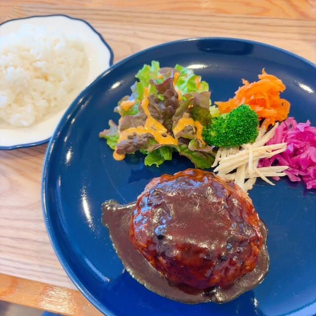
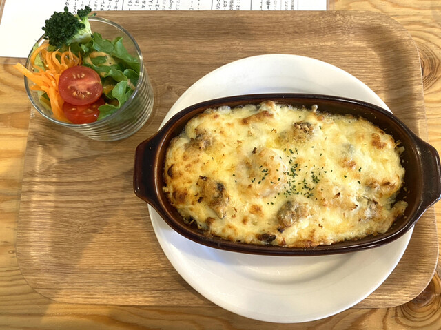
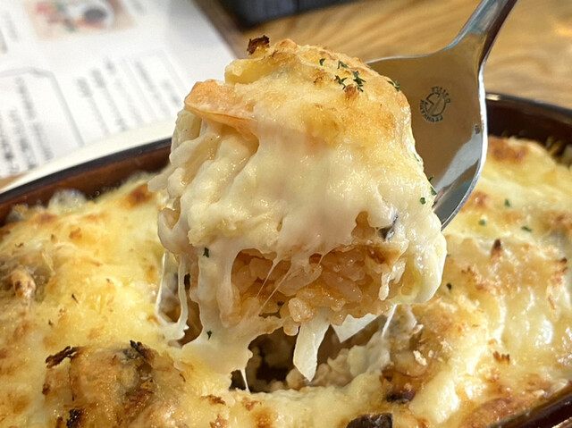

Photo Gallery
緑ヶ岡エリアの北欧スタイルカフェ。スモーブロー（北欧オープンサンド）など本格的な北欧料理とこだわりのコーヒーが楽しめる釧路唯一の北欧カフェ。



釧路市緑ヶ岡4丁目に佇むカフェフィーカは、北欧のカフェ文化「フィーカ（fika）」をコンセプトにした釧路唯一の北欧スタイルカフェです。「フィーカ」とはスウェーデン語でコーヒーブレイクを意味し、仕事や日常の合間に温かい飲み物とともにゆっくりとした時間を楽しむ北欧の習慣。
名物の「スモーブロー（smørrebrød）」は北欧の開いたサンドイッチで、ライ麦パンに各種トッピングを乗せた北欧料理の定番。食べログID1058053・HotPepperID strJ001235017にも登録されており、釧路の食通や北欧好きの間で話題を集めています。日・月・火と週3日の定休日があるため、訪れる前に営業日を必ず確認してください。
「釧路にこんな北欧カフェがあるとは」と驚く口コミが多い。スモーブローはライ麦パンにサーモン・アボカド・クリームチーズなどのトッピングが美しく並び、見た目も味も本格的な北欧の味わい。コーヒーへのこだわりも強く、産地を選んで丁寧に淹れた一杯は深みと香りが抜群。
店内は北欧のインテリアを意識したシンプルでおしゃれな空間。緑ヶ岡の静かな住宅街という立地も相まって、非日常感のあるゆっくりとした時間を過ごせます。釧路という場所でこれほど本格的な北欧体験ができるのは貴重で、わざわざ遠方から訪れる価値があります。
📎 公式Webサイト
カフェフィーカ 公式サイト